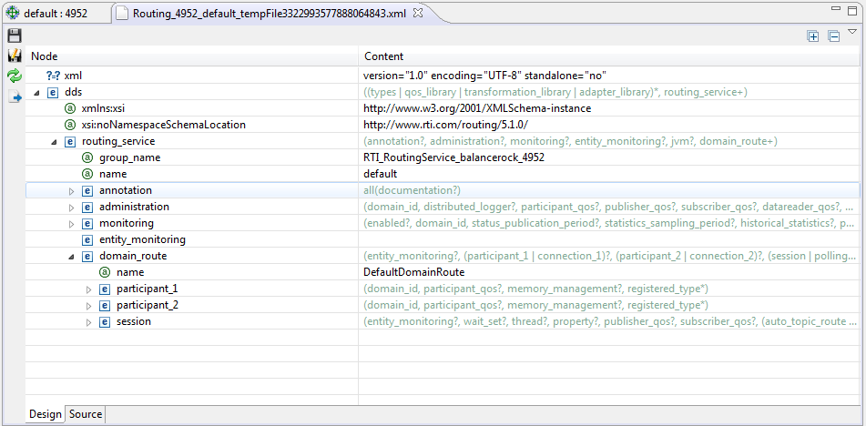
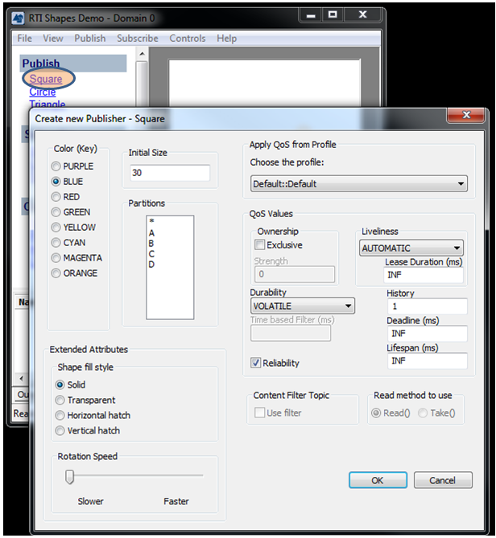
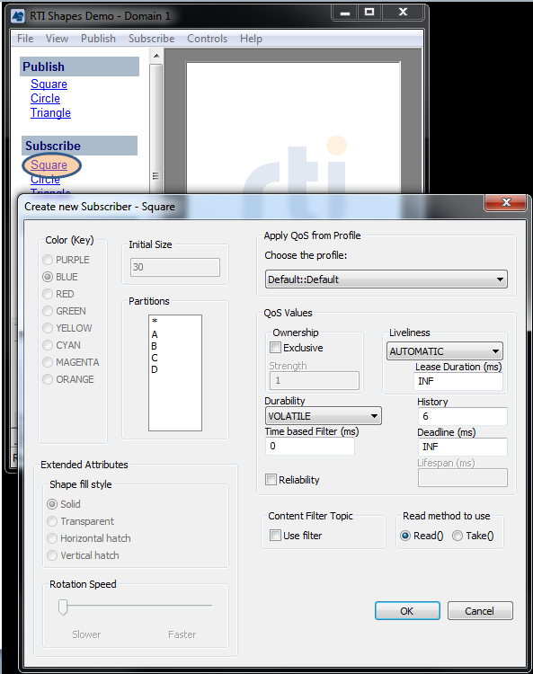
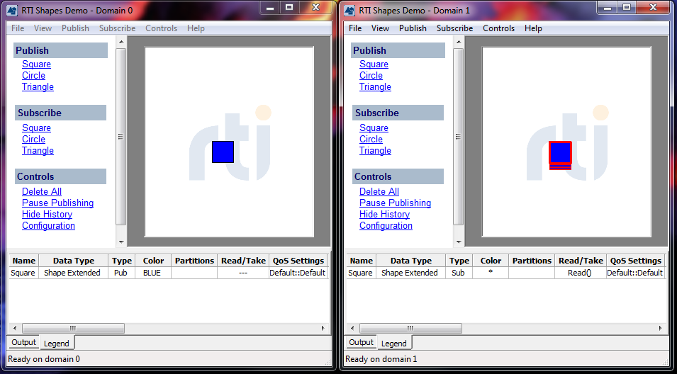

In this step, we will look at the
Service Details panel. Click on the Routing Service node in the
Physical View or in the Processes View. Near the top you will see a
the service's status and buttons to control the service.
Click on the configuration buton. This will open the current
configuration for Routing Service. Browse around the file and you will
see that this configuration routes various shapes from domain 0 to
domain 1. In the configuration page, you can choose between the
"Design" view and the "Source" view through the tabs
in the lower left corner.

Routing service should already be running. Follow the steps
below to see Routing Service in action.
- Publish Squares on Domain 0:
From Step 1 of the tutorial, you should already have two
instances of Shapes Demo: one using domain 0 and one using domain 1.
In the Shapes Demo instance that uses domain 0, publish squares. We
will call this the Publishing Demo.

- Subscribe to Squares on Domain 1:
In the Shapes Demo instance that uses domain 1, subscribe to
squares. We will call this the Subscribing Demo.

Now you
should see the squares published in domain 0 appear in domain 1,
because Routing Service is routing the data from domain 0 to domain
1.

Now try to pause Routing Service. You should see the squares in the
Subscribing Demo (using domain 1) pause.
The Pause button will toggle into the Resume button. Click on Resume,
and the shapes in the Subscribing Demo should appear again.
Relevant reference topics:
Routing Service
View.